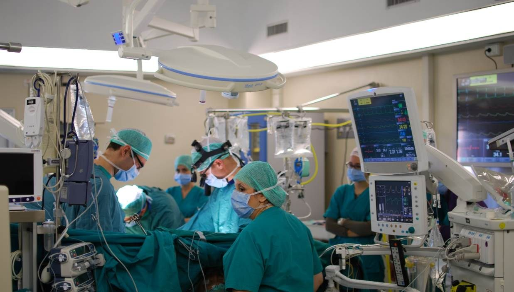

'외과 신의 손' 우쥔더…전립선암 환자 요실금 부담 덜어
대만의 외과 전문의 우쥔더(吳俊德)가 정교한 수술로 전립선암 환자들이 수술 후 요실금 부담을 덜 수 있도록 돕고 있다. 환자 삶의 질을 높이는 의료의 가치를 보여주는 사례다.
주유민 기자 · 2026.06.19
橋사회

연합보는 '외과 신의 손'으로 불리는 우쥔더 의사가 전립선암 환자가 더 이상 요실금으로 고통받지 않도록 돕는다고 전했다. 정밀 수술 기법이 환자 회복에 기여한다는 내용이다.
광고 문의 · 300×250삶의 질을 지키는 의료
전립선암 수술은 생존뿐 아니라 수술 후 배뇨 기능 같은 삶의 질이 중요한 과제다. 신경과 조직을 정교하게 보존하는 수술 기법은 요실금 같은 후유증을 줄여 환자의 일상 복귀를 돕는다.
의료 기술의 발전은 단순히 병을 고치는 것을 넘어, 환자가 존엄하게 일상을 이어가도록 하는 데 의미가 있다. 의료진의 숙련과 환자 중심의 접근이 핵심이다.
華橋時報는 건강·의료 정보를 화인 사회에 전한다. 고령 인구가 늘어나는 가운데 전립선 건강은 많은 가정의 관심사다.
정확한 진단과 조기 치료, 그리고 환자 삶의 질을 고려한 의료가 함께 갈 때 치료의 효과는 더 커진다.
출처·참고 (사실 확인용 — 본문은 직접 재작성)
· 연합보(聯合報) 2026.06.19 '外科神刀手／吳俊德 造福攝護腺癌患者不再尿失禁'
· 연합보(聯合報) 2026.06.19 '外科神刀手／吳俊德 造福攝護腺癌患者不再尿失禁'